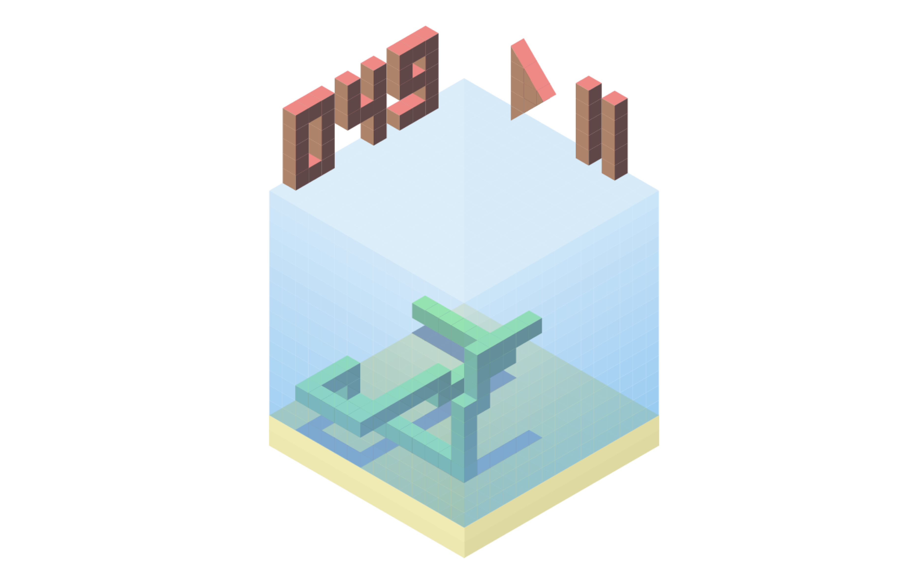
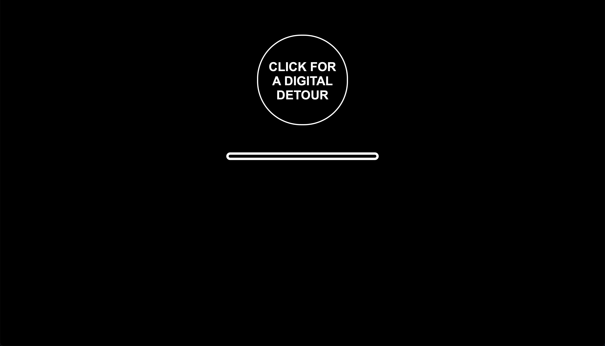

Hi, I'm Adam.
I'm an experience designer / artist / software developer.
I'm currently a student at Carnegie Mellon University, studying Computer Science and Art.
I make speculative / critical software, games, and other interactive projects. Here's some of my work:
"How many clicks does it take to get to the center of a Google popup?"
Chrome extension, 2022
User interfaces for modifying data collection settings have become increasingly deceptive and difficult to navigate. They have become puzzle games. This Chrome extension formalizes that game, providing a timer and a score based on your performance. I want people to have some incentive to go through these settings, experience them firsthand, and think about the interface, because these pages are often ignored. This extension isn't publicly available yet, but I'm working on releasing it.
"Black Box"
Installation, 2021
An interactive installation which assigns people a number from 0 to 10. The same viewer will always get the same number. Algorithms are constantly evaluating us, rating us on different scales, without us understanding or being shown what's happening. This piece tries to make that process more tangible, and make viewers ask, what does this number mean?
counter.current
Desktop Game, 2021
A game created in Unity with William Lamkin and Ilan Elowitz, where a popular social media app is unexpectedly shutting down and the player is attempting to save the communities that inhabited it.
"Bossy Software"
Single-Page Interactive, 2019
A web-based interaction made with p5.js. A mischevious program offers picture of cute animals, but makes the user perform a long series of tasks before delivering on its promise.
Scotty Reports
Mobile App Concept, 2021
A concept for a reporting app for Carnegie Mellon students. I designed and created a voice user interface using p5.js with Jina Lee, Elysha Tsai, and Mohammed Rahman. We found that many students are dissatisfied with how Carnegie Mellon responds to various incident reports, from academic issues to issues of harrassment or mental health risks, so we designed an app where students would be able to anonymously report, connect with other students reporting similar issues, and see concrete results from their reports.
Eel
Single-Page Web Game, 2018

A 3D version of the classic Snake game, made using Processing. The 3D graphics were written from scratch.
Try it here. (The controls are W & S for up & down, A & E for one axis, and Q & D for the other axis).
Digital Detours
Single-Page Interactive, 2021

A dispenser of prompts for alternative ways to interact with common digital interfaces.
Try it here.
"Future Graffiti"
Installation
A screen which a viewer can graffiti on using a spraycan prop. The top of the spraycan clicks a mouse on the inside, and a camera is tracking the spraycan using a custom-trained neural network.